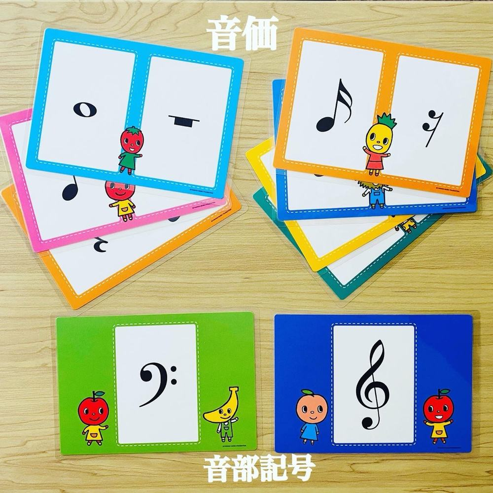
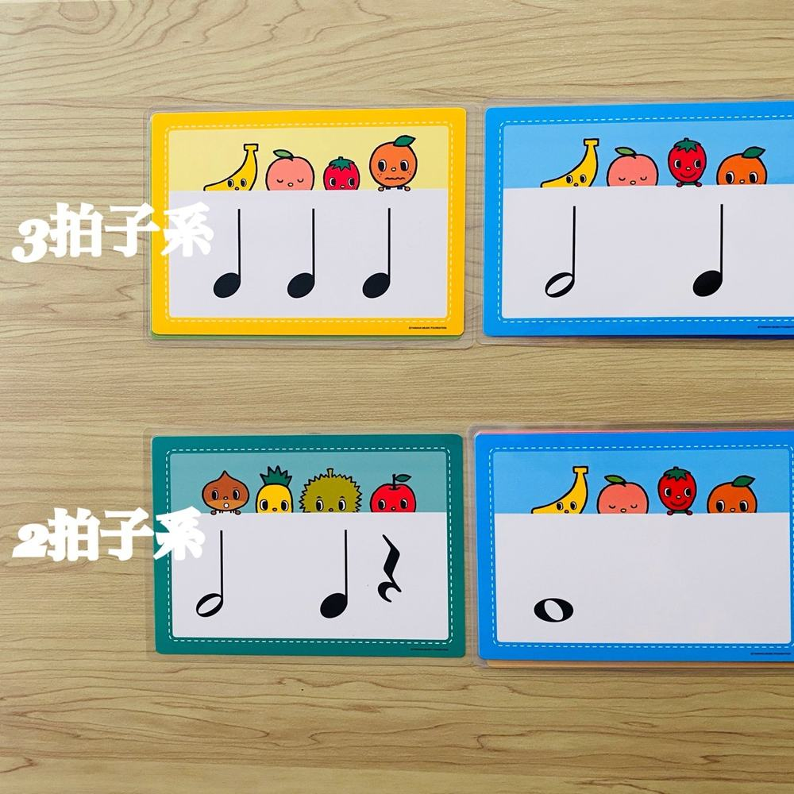
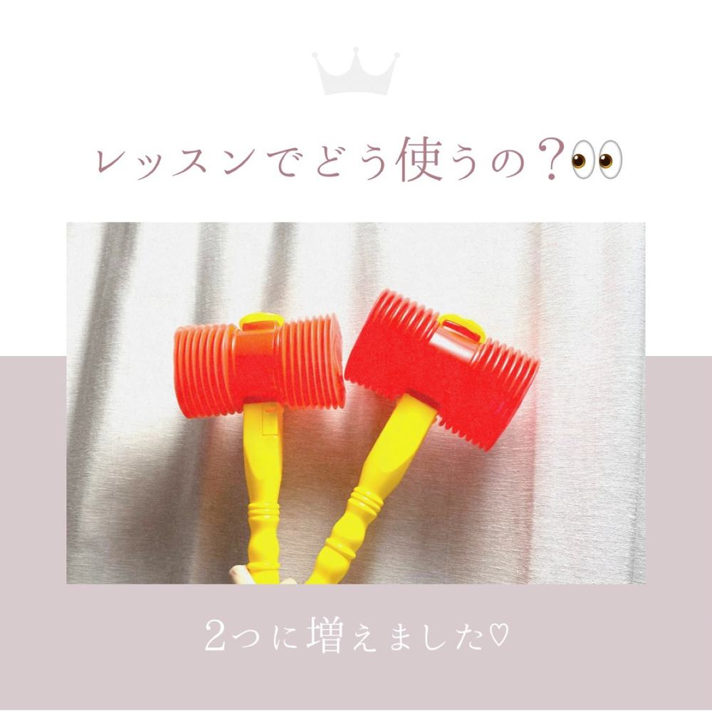
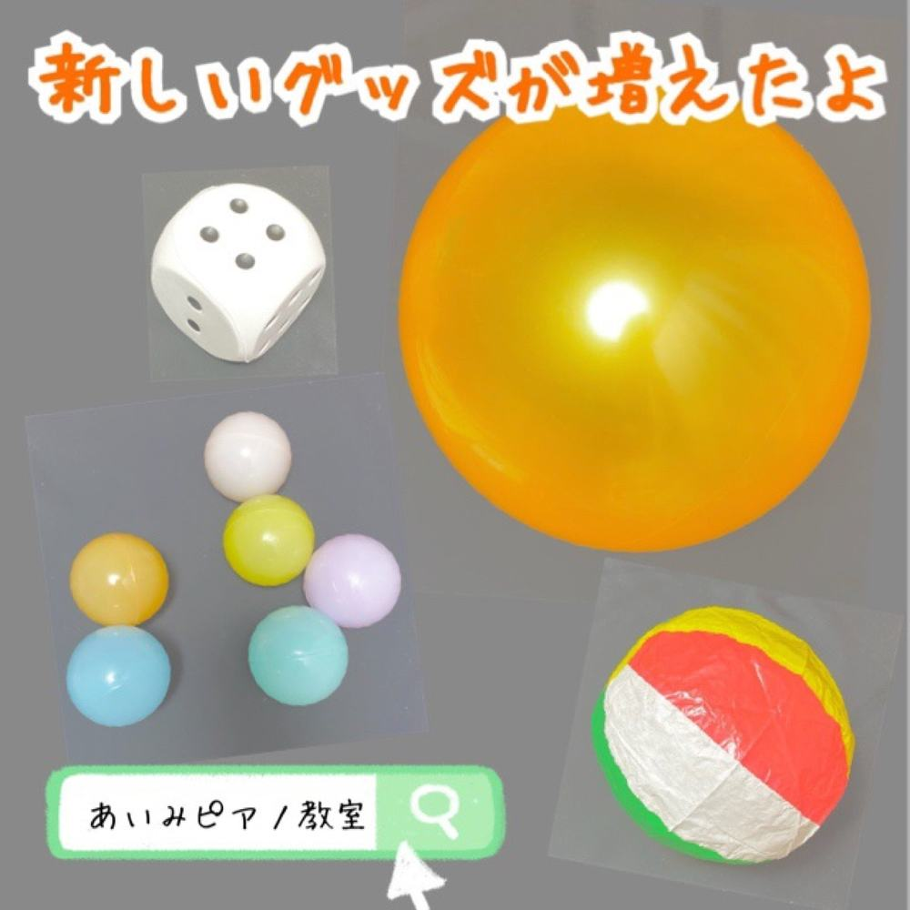

リトミックとは
リトミックは、
講師の

見る・たたく・動く・書く
見るだけで
見て覚えるリズムカード
大きくてかわいい
たたいて感じるピコピコハンマー
メトロノームに
動いて感じるボール・紙風船
音楽に
書いて身につけるリズムやワークの本
弾く本とは



年齢に合わせて
3〜4歳ごろ
まだ
小学生
速くて
弾く気分じゃない日も
「今日は
教室日記から（リズム・リトミック）
リトミックについてのよくある質問
何歳からリトミックを受けられますか？
3歳ごろから
リトミックだけのコースはありますか？
リトミックだけの
体験レッスンでもリトミックをしますか？
お子さまの
まずは体験レッスンへ
楽譜が
体験レッスン 30分 1,000円
体験